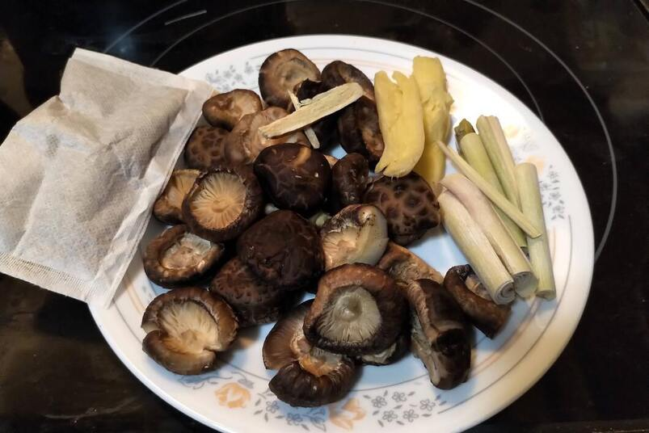

Ingredients
The signature tastes associated with Chinese cuisine are largely due to the ingredients used.
Incorporating key items helps accentuate and bring forth certain flavours in the dish you
are preparing. Most items can now be found at more local grocery stores, with the expanding
selection of international foods available, but others are more exclusive and can be found at
Asian stores.
Back to Top
- Seasonings and spices
- White pepper, Red pepper powder, five spice powder, chicken seasoning, peppercorn, star anise, cinnamon, spice packs, rock sugar, maltose
- Aromatics
- One important role of ginger, aside from flavouring, is that it is used to prepare
certain meats and fish as it absorbs and reduces some of the strong smells and odours.
ginger, green onion, garlic, shallots - Sauces and condiments
- Dark soy sauce, light soy sauce, sesame oil, oyster sauce, sesame paste, sacha sauce, fermented bean curd, fermented black bean sauce, fish sauce, black vinegar, red vinegar, chili oil
- Dried goods
- Shiitake mushrooms, dates, goji berries, yam strips
- Starches
- rice flour, glutinous rice flour, potato starch, sesame powder, rice, noodles
- Produce
- chives, Chinese cabbage, Chinese vegetables, bittermelon